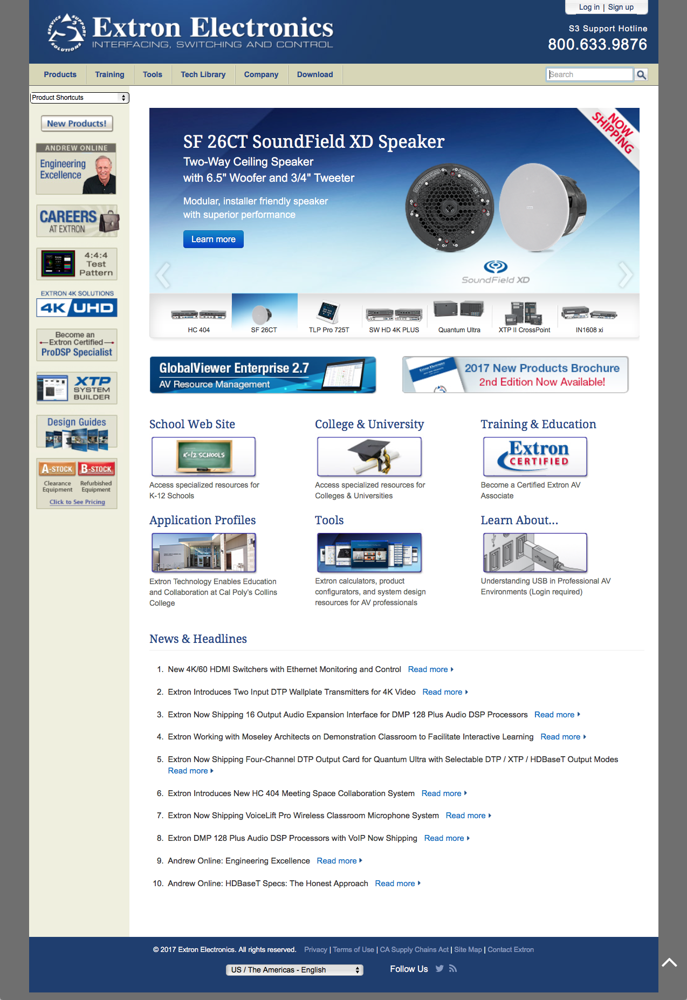

Company name
Manufacturer of AV System Integration Products
Providing customers better website...
Project overview
The Challenge
Expert and novice users of the website were unable to efficiently find
My Role
I was the UX researcher on the project, whihc meant defining business objectives and user requirements and working with the
design team to get user feedback on wireframes and prototypes.
The Team
The design team included myself and one other web designer.
The legacy website experience
understanding user needs and business objectives (current state)
understanding the current state, where it succeeds or fails. conducted user research to reveal some big experience gaps?
to reveal user pain points in current workflow. and found there was a need for an online support. current pain points with
other knowledgebases.

<
Kicking off the project
high level product requirements and user requirements -